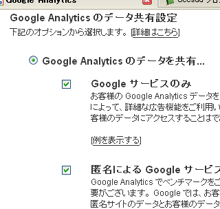

アドセンスの単価とブログのページビュー
グーグルアドセンスのヘルプを見てみるとコンテンツが大切だよって書かれているようです。これはわたしの個人的な意見ですが、たぶん、コンテンツの充実しているサイトやブログではアドセンスの際の単価も上がるのではないかと思ったりです。
でも、自分では中身のあるブログだと思ってもそれを判別するには、ほかのサイトからの被リンク数やブックマークサービスでのブックマークなどがなくてはいけないと思います。
でも、一番てっとりばやいアピール方法はアクセス解析のアナリティックスを使うことなんじゃないかなと思います。
アナリティックスでページビューの計測
アクセス解析のグーグルアナリティックスをあなたのブログに設置しておくとページビューや閲覧時間など正確に計測してもらえます。
もし、あなたのサイトがとても中身があってページビューも３０とかあるブログで、滞在時間も２時間とかあるブログだったとしても、アナリティックスを使っていないとグーグルの方ではわからないと思うんです。
これはおそらく、検索結果での位置にも関係してくるのではないでしょうか。同じキーワードで検索されて１秒で離脱しているページと１時間読まれているページでは、一時間読まれているページの方をグーグルもおすすめするはずです。
中身のある記事を書いたけど被リンクがまったくないという人なんかはアナリティックスを導入して自分のブログの滞在時間をアピールすればいいのではないかなと思います。
アナリティックスを利用する際は共有機能をオンにして、グーグルにあなたのブログのページビューや滞在時間なんかを、こんなにあるんだよ、こんなにあるんだよってアピールするといいと思います。

ただ、滞在時間やページビューだけではわからないこともたくさんあると思います。たとえば、グーグルなんかはよく利用するサイトですが、滞在時間でいえば、思いっきり短いサイトだと思います。
もしくはユーチューブ動画だけぺたぺたはりつけておけば、記事をかかなくても滞在時間がながくなったりもしちゃいます。
滞在時間が短いことがそのまま中身のないということにはならないこともあると思いますがある程度は判断できるんじゃないでしょうか。
そんなわけで検索結果やアドセンスの単価などに影響してくる可能性もあるので、ブログを作ったさいのアクセス解析にはグーグルのアナリティックスを利用することを私はおすすめします。
- 無料ブログでグーグルアドセンス
グーグルのグーグルアドセンスは、あなたのブログやサイトに広告を自動で表示してくれるグーグルの無料サービスのことです。 Google AdSenseは毎回同じ広告ということではなく、時間の経過やクリ... - グーグルアドセンスの無料ブログ使用
グーグルアドセンスの広告をシーサーブログなどの無料ブログで使用する際、広告を掲載できる場所はコンテンツのある場所だけなのですが、タグ表示などのリンクからはいっていくとたまにタグのみ表示される画面があり... - 無料ブログのグーグルアドセンス
無料ブログでグーグルアドセンスをやる際に役立ちそうな情報に関する記事の一覧。 グーグルアドセンス アドセンスの単価など グーグルアドセンスの無料ブログ使用 アドセンスビデオ ブロ... - アドセンスクリック単価は月末高くなるの法則
グーグルアドセンスのクリック単価ですが高くなったり低くなったりといろいろとあるようです。ニュースサイトや芸能ブログの場合はさまざまな分野の記事を書くことになるので関連性が薄くなるためか、若干クリック単...